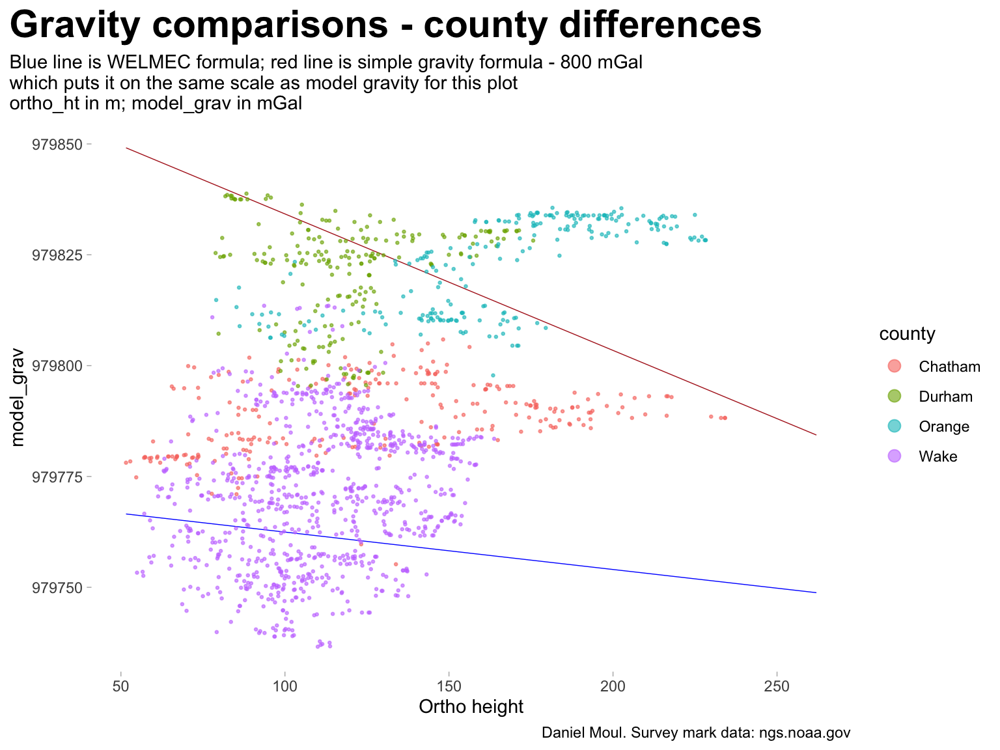

Since the datasheets include modeled gravity, let’s see what we can learn.
4.1 Introduction: Gravity and elevation
What does gravity have to do with elevation? And why is it interesting enough to dwell on here? All other things being equal, stepping on a scale at higher elevation results in a lower reading on the scale (if the scale is accurate enough!). And local gravity varies for more reasons than elevation.
Ignoring local conditions, the acceleration due to gravity \(g\) at altitude \(h\) above sea level is
where radius of the earth \(r_e = 6371.009\ km\) and acceleration due to gravity at sea level is \(9.80665\ m/s^2\)1. Altitude is another name for elevation and is measured relative to a specific datum. In the case of US survey marks, the datum used here is the North American vertical datum of 1988 (NAVD 88).
Since we cannot afford to measure gravity in every location, we use modeled gravity. For example, as noted in the datasheet for PID EZ0704:
EZ0704 *CURRENT SURVEY CONTROL
EZ0704 ______________________________________________________________________
EZ0704* NAD 83(1986) POSITION- 35 47 07.95 (N) 078 40 03.18 (W) HD_HELD1
EZ0704* NAVD 88 ORTHO HEIGHT - 119.962 (meters) 393.58 (feet) ADJUSTED
EZ0704 ______________________________________________________________________
EZ0704 GEOID HEIGHT - -32.775 (meters) GEOID18
EZ0704 DYNAMIC HEIGHT - 119.859 (meters) 393.24 (feet) COMP
EZ0704 MODELED GRAVITY - 979,772.2 (mgal) NAVD 88
....
EZ0704.The dynamic height is computed by dividing the NAVD 88
EZ0704.geopotential number by the normal gravity value computed on the
EZ0704.Geodetic Reference System of 1980 (GRS 80) ellipsoid at 45
EZ0704.degrees latitude (g = 980.6199 gals.).
EZ0704
EZ0704.The modeled gravity was interpolated from observed gravity values.
4.2 Survey marks and model gravity
Figure 4.1 shows the general trend: gravity is associated with elevation. As you move to the northwest in these counties the elevation increases, and the gravity decreases.
TODO: Double-check this: color and legend seem backwards?
Figure 4.2 shows there is not a 1:1 correspondence between model_grav and ortho_ht. The pattern in panel B somewhat matches the left half of panel A. But why are there two extra sections in panel A with higher gravity?
The two extra “bumps” in Figure 4.2 correspond to the top two teal blue horizontal “arms” in Figure 4.3 (the second large arm in red is hidden in the main shape of Figure 4.2 panel A). I assume the “arms” are the result of differing density in the ground in Orange and Chatham counties (more specifically: differing density gradients, since in these “arms” as elevation increases, the gravity stays approximately constant. In other words, the geology of these two pairs of counties includes similar gradients in density at differing mean elevations. This could happen in both cases, for example, if less dense sedimentary rock covers denser bedrock, and as you move in the direction of higher elevation the amount of sedimentary rock underneath you declines.
The red line is theoretical gravity using the simple formula Equation 4.1 presented at the beginning of this chapter. The theoretical gravity is so much higher (approx. 800-900 mGal) than the model gravity, probably because NGS’s calculation of model gravity is much more sophisticated2 in pursuit of greater accuracy.
Show the code
ggplot() +geom_line(data = dta_gravity_theoretical_line,aes(x = ortho_ht, y = model_grav -800),color ="firebrick", linewidth =0.25) +geom_point(data = data_for_plot_gravity,aes(ortho_ht, model_grav, color = county),size =0.5, alpha =0.6,na.rm =TRUE) +scale_x_reverse() +guides(color =guide_legend(override.aes =c(size =3))) +labs(title ="Gravity comparisons - county differences",subtitle =glue("Red line indicates theoretical gravity - 800 mGal", ", which puts it on the same scale as model gravity for this plot","\northo_ht in m; model_grav in mGal"),x ="Ortho height (scale reversed)",y ="model_grav",caption = my_caption )

Figure 4.3: Gravity comparisons - county differences
Surface geology is visible in the Geologic Map of North Carolina published by the Department of Environmental Quality - Geological Survey. An important note accompanying the map:
What is this Viewer?
GIS data set version of the Geologic Map of North Carolina 1985. The data represents the digital equivalent of the official State Geology map (1:500,000- scale), but was digitized from (1:250,000-scale) base maps. There is one additional data set which accompany this layer, dikes.
This geology is considered deprecated (not recommended for use) by the NC Geological Survey. There is currently no replacement for it that covers the whole state. We are working on a replacement that will be made available to the public in the near future (2024). This new dataset will be in the United States Geological Survey (USGS) Geologic Map Schema (GeMS). When first released this data set will only cover a portion of the State at a scale of 1:100,000. This dataset will be dynamic and expand to cover the whole state by as early as 2030 at which point this layer will be removed from service.
And unfortunately I haven’t found away to mask the map to the four county boundaries, add a legend explaining the colors and patterns, or download shapefiles so I could do this myself. So to accompany the interactive map (see above link), I offer this screen capture of the area including our four counties of interest:
Blue: Carolina terrane: This terrane consists of heated and deformed volcanic and sedimentary rocks. The terrane contains rocks associated with a series of oceanic volcanic islands about 540-630 million years ago. The terrane is known for its numerous abandoned gold mines and prospects. North Carolina led the nation in gold production before the California Gold Rush of 1849. In recent decades, only minor gold mining has taken place, but mining companies continue to show interest in the area. Mineral production is crushed stone for road aggregate, light-weight aggregate and pyrophyllite for refractories, ceramics, fillers, paint and insecticide carriers.
Green: Triassic basin - Deep River basin: Triassic basins: The Triassic basins are filled with sedimentary rocks that formed about 220 million years ago. Streams carried mud, silt, sand and gravel, from adjacent highlands into rift valleys similar to those of Africa today. The Triassic basins formed when the super continent Pangea began to split apart. The mudstones are mined and processed to make brick, sewer pipe, structural tile and drain tiles. Coal deposits have been mined in the past. Potential deposits of natural gas are present in the Triassic basins of North Carolina.
Red: Diabase: Diabase is an igneous rock that occurs as sills and dikes within the Triassic basins and is present as dikes throughout the Piedmont of the State. Diabase intruded into the existing rock of the State approximately 200 million years ago as the Atlantic Ocean was beginning to form during the breakup of the super continent Pangea. Diabase is a good source of crushed stone. The fractures present in weathered diabase dikes and sills can be important sources of groundwater.
Purple: Crabtree terrane: The terrane consists mostly of metamorphosed igneous, volcanic, and sedimentary rocks. A unique rock of the terrane includes the graphitic schist in the Raleigh area. These rocks were part of a large chain of ancient volcanic islands that formed off the coast of the ancient continent called Gondwana. The igneous rocks are good sources for crushed stone for road aggregate and construction purposes.
Blue-purple: Raleigh terrane: The terrane consists mostly of metamorphosed igneous rocks. The rocks were part of a large chain of ancient volcanic islands that formed off the coast of the ancient continent called Gondwana. In the 19th century, there were a number of small building stone quarries in this region, but today the main mineral product is crushed stone for construction and road aggregate.
Grey: Falls Lake terrane: The terrane consists mostly of metamorphosed sedimentary rock and lesser amounts of metamorphosed igneous rocks. The terrane is dominated by the Falls Lake schist. Historically, the terrane is known as a source of talc that was used by early settlers for carving tombstones. The rocks were part of a large chain of ancient volcanic islands that formed off the coast of the ancient continent called Gondwana.
Pink: Late Paleozoic intrusions: Late Paleozoic intrusions are mainly composed of the igneous rock granite and granodiorite. These rocks intruded as giant blobs of molten rock (magma) during the formation of the Appalachian Mountain chain (approximately 280 to 320 million years ago). Late Paleozoic granites and granodiorites are good sources of crushed stone, quartz, feldspar, and mica. This rock type is also linked to areas with elevated Radon concentrations in air and groundwater.
Brown: Spring Hope terrane: This terrane contains slightly metamorphosed volcanic and sedimentary rocks similar to those to the Carolina terrane. The rocks are poorly exposed and partially covered by Coastal Plain sediments. The metamorphic rocks, 525 to 630 million years old, are intruded by approximately 300 million year old granitic bodies. Gold was once mined in the terrane, and small occurrences of molybdenite, an ore of molybdenum, have been prospected here. Crushed stone, clay, sand and gravel are currently mined in this belt.
Yellow: Coastal Plain: The Coastal Plain is a wedge of mostly marine sedimentary rocks that gradually thickens to the east. The Coastal Plain is the largest geologic element in the state, covering about 45 percent of the land area. The most common sediment types are sand and clay, although a significant amount of limestone occurs in the southern part of the Coastal Plain. In the Coastal Plain, geology is best understood from studying data gathered from well drilling. The state’s most important mineral resource in terms of dollar value is phosphate, an important fertilizer component mined near Aurora, Beaufort County. Industrial sand for making glass, for use in filtration and sandblasting is mined in the Sandhills area.
Now trying this: https://www.ngdc.noaa.gov/mgg/gravity/
From 1999 (so out of date):
https://www.ngdc.noaa.gov/mgg/gravity/1999/data/grids/dgrav/dgrav.txt
https://www.ngdc.noaa.gov/mgg/gravity/1999/data/grids/dgrav/dgrav.gif
https://www.ngdc.noaa.gov/mgg/gravity/1999/data/grids/dgrav/
Interesting gravity accuracy codes listed in https://www.ngdc.noaa.gov/mgg/gravity/1999/document/supplmnt/dctnary/98terms.html
Elevation accuracy (ft)
40 ft = 2.0 mGal
20 ft = 1.0 mGal
10 ft = 0.5 mGal
Latitude accuracy (min) (Lat. gravity effect based on mean value of 1.45 mGal/min at Latitude 37)
1.4 min = 8,400 ft = 2.0 mGal
0.70 min = 4,200 ft = 1.0 mGal
0.35 min = 2,100 ft = 0.5 mGal
WGM2012 is the first release of a high resolution grids and maps of the Earth’s gravity anomalies (Bouguer, isostatic and surface free-air), computed at global scale in spherical geometry. It has been realized by the Bureau Gravimétrique International (BGI) in the frame of collaborations with international organizations such as Commission for the Geological Map of the World (CGMW), UNESCO, International Association of Geodesy (IAG), International Union of Geodesy and Geophysics (IUGG), International Union of Geological Sciences (IUGS) and with various scientific institutions.
WGM2012 gravity anomalies are derived from the available Earth global gravity models EGM2008 and DTU10 and include 1’x1′ resolution terrain corrections derived from ETOPO1 model that consider the contribution of most surface masses (atmosphere, land, oceans, inland seas, lakes, ice caps and ice shelves). These products have been computed by means of a spherical harmonic approach using theoretical developments carried out to achieve accurate computations at global scale (Balmino, G., Vales, N., Bonvalot, S. and Briais, A., 2011. Spherical harmonic modeling to ultra-high degree of Bouguer and isostatic anomalies. Journal of Geodesy. DOI 10.1007/s00190-011-0533-4).
WGM2012 Reference / Authors
Bonvalot, S., Balmino, G., Briais, A., M. Kuhn, Peyrefitte, A., Vales N., Biancale, R., Gabalda, G., Reinquin, F., Sarrailh, M., 2012. World Gravity Map. Commission for the Geological Map of the World. Eds. BGI-CGMW-CNES-IRD, Paris. https://doi.org/10.18168/bgi.23
Regional data extraction https://bgi.obs-mip.fr/data-products/outils/wgm2012-maps-visualizationextraction/